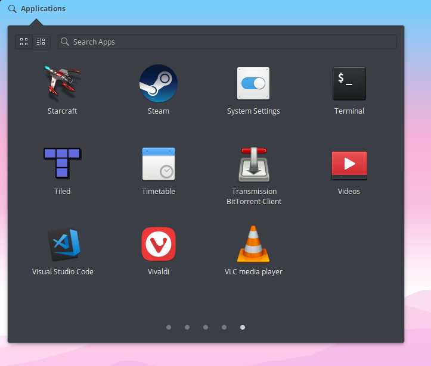

The holiday season was uh, eventful. Constant firmware issues with my Surface Pro 3, depression, anxiety, lost my job, currently have .23 in the bank. Cool. Eventually traded the Surface to my bestie, who gave back my old ASUS Zenbook UX305U.
I spent a couple days attempting to Hackintosh it (Mojave), which went partially well. However, I was unable to get the touchpad or audio working properly. Oh well. Now it’s running Elementary OS Juno, with a dark theme and OSX-style window buttons.
I used Elementary (and Mint) on this laptop when I first bought it in 2015, and I had a lot of issues with it. But, the Linux kernel has improved a lot since then, and so has Elementary. The install (with updates) only took about 20 minutes, I've had zero driver issues, and my Wacom tablet works out of the box (except the wireless).
Most of my toolchains are cross-platform, luckily. I do need an alternative to Affinity Designer, though. Although… I could try it under wine.
Speaking of wine: one of the first things I did was grab AppEditor from the AppCenter. Creating custom .desktop entries is easy, but having a graphical editor for them is convenient. A little Googling, and I have a script to pull the .ico out of Windows executables. So, now, several Windows goodies are in my Applications menu:

You will also notice the dark theme, which was easy to install. I've had a painless time setting up my dev environments, and it’s a welcome change coming from Windows 10.